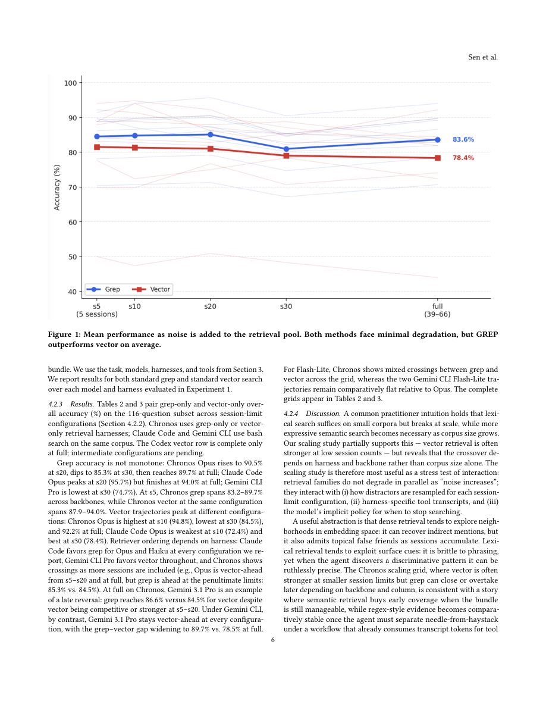

#1
★ 6/10
Is Grep All You Need? How Agent Harnesses Reshape Agentic Search
Grep 就够了吗？智能体工具框架如何重塑智能搜索

图 Figure · Page 6 of paper
🎯 在智能体搜索中，Grep比向量检索更准，但框架选择影响更大
Grep outperforms vector retrieval in agentic search, but harness choice matters more than retrieval method.
| 维度 | 中文 | English |
|---|---|---|
| ❓ 待解决 的问题 |
大语言模型智能体系统越来越多地使用检索增强生成（RAG）来在大型文本语料中查找信息。然而，学界缺乏对"检索策略"与"智能体架构"及"工具调用方式"之间交互关系的系统性比较。尤其是工具输出的呈现方式（内联 vs. 文件读取）以及无关背景文本增多时性能如何变化，这些实际问题几乎没有被深入研究过。 | LLM agent systems increasingly rely on retrieval-augmented generation (RAG) to search large corpora, but there is no systematic study comparing how retrieval strategy interacts with agent architecture and tool-calling style. Practical dimensions—such as whether tool results are shown inline or read from files, and how performance degrades with increasing irrelevant context—remain largely unexplored in real agentic loops. |
| 💡 解决 的亮点 |
• 首次系统对比了 Grep 与向量检索在多种真实智能体框架（Chronos、Claude Code、Codex、Gemini CLI）中的表现差异。 • 引入"工具输出呈现方式"这一新维度：内联结果 vs. 文件式结果，揭示其对模型准确率的独立影响。 • 通过逐步混入无关对话历史的压力测试，系统量化了干扰文本对两种检索策略的影响，发现框架选择的影响甚至超过检索方法本身。 | • First systematic empirical comparison of grep vs. vector retrieval across multiple real-world agent harnesses (Chronos, Claude Code, Codex, Gemini CLI). • Introduces tool output presentation style (inline vs. file-based) as a novel experimental dimension that independently affects model accuracy. • Stress-tests both retrieval strategies by progressively injecting irrelevant conversation history, quantifying robustness to distractor context. |
| 🧪 实验 内容 |
实验在 LongMemEval 基准数据集的116题样本上展开，该数据集专为长上下文记忆问答设计。基线模型包括四种智能体框架：自研 Chronos、Claude Code、Codex CLI 和 Gemini CLI。评估指标为问答准确率。实验一对比了检索策略（Grep vs. 向量）× 工具输出格式（内联 vs. 文件式）共4种组合。实验二通过逐步增加无关对话轮数，测试两种检索策略的鲁棒性。 | Experiments were conducted on a 116-question sample drawn from LongMemEval, a benchmark designed for long-context memory question answering. The baselines span four agent harnesses: the authors' custom Chronos framework, Claude Code, Codex CLI, and Gemini CLI. The primary evaluation metric is question-answering accuracy. Experiment 1 uses a 2×2 design crossing retrieval strategy (grep vs. vector) with tool output format (inline vs. file-based). Experiment 2 incrementally injects irrelevant conversation history to stress-test each retrieval strategy's robustness to distractor noise. |
| 📊 实验 结果 |
在实验一中，Grep 检索在多数框架和工具输出格式组合中均优于向量检索；例如在 Chronos 框架下，Grep 的准确率显著高于向量检索。框架本身对最终得分的影响甚至超过检索方法的选择——不同框架之间的准确率差距明显大于同一框架内 Grep vs. 向量的差距。在实验二中，随着无关对话历史增加，向量检索的性能下降幅度总体上比 Grep 更明显，表明 Grep 在高噪声场景下具有更强的鲁棒性。内联工具结果与文件式工具结果之间也存在可观察到的准确率差异，具体方向因框架而异。（注：论文为实证研究报告，完整数值表格详见原文。） | In Experiment 1, grep retrieval outperforms vector retrieval across most harness and tool-format combinations; within the Chronos harness, grep yields notably higher accuracy than vector retrieval. Critically, the choice of harness architecture produces accuracy gaps that are larger than the grep-vs.-vector gap itself, indicating harness design dominates retrieval method in determining overall performance. In Experiment 2, vector retrieval degrades more sharply than grep as irrelevant conversation history grows, confirming grep's greater robustness to distractor noise. Inline vs. file-based tool output presentation also produces measurable accuracy differences that vary by harness. (Full numerical tables are reported in the paper.) |
| 🏁 结论 | 本文通过系统实证研究证明，在智能体搜索场景中，Grep 检索总体上优于向量检索，但智能体框架的选择和工具输出的呈现方式对最终性能的影响同样举足轻重，甚至超过检索策略本身。这一发现提醒研究者和工程师在构建 RAG 智能体系统时，不能只关注检索算法，框架设计同样是决定性因素。 | This paper empirically demonstrates that grep-based retrieval generally outperforms vector retrieval in agentic search pipelines, while also showing that agent harness architecture and tool output presentation style exert an equal or greater influence on end-to-end accuracy than the retrieval method itself. The findings urge practitioners building RAG-based agent systems to treat harness design as a first-class concern alongside retrieval algorithm selection. |
| 🔗 论文 链接 |
arXiv: 2605.15184v1 · 📥 PDF | |
⚙️ Method · 方法详解
研究设计了两个实验。实验一使用自研的 Chronos 框架和三个主流提供商 CLI（Claude Code、Codex、Gemini CLI），在 LongMemEval 数据集的116道题上，对比 Grep 和向量检索在"内联工具结果"与"文件式工具结果"两种呈现模式下的准确率。实验二固定使用 Grep-only 和 Vector-only，通过逐步向查询中混入越来越多的无关对话历史，观察两种检索策略在噪声增加时的性能变化曲线。所有实验在相同底层对话数据上进行，以便控制变量、隔离框架和检索策略各自的影响。
The study runs two controlled experiments. Experiment 1 evaluates grep and vector retrieval on a 116-question sample from LongMemEval using four agent harnesses—a custom harness (Chronos) and three provider-native CLIs (Claude Code, Codex, Gemini CLI)—under both inline and file-based tool result presentation styles, holding the underlying conversation data constant. Experiment 2 isolates the robustness question by progressively mixing increasing amounts of unrelated conversation history into each query context, measuring how grep-only and vector-only retrieval degrade as distracting material grows. This design allows the authors to disentangle the effects of retrieval method, harness architecture, and tool output format.
🌟 Why It Matters · 为什么重要
随着 LLM 智能体系统快速落地，研究者和工程师普遍假设向量检索优于简单的词法检索（如 Grep），但本文用实验打破了这一假设。更重要的是，本文揭示了"框架设计"这一被忽视的变量对系统性能的主导作用，为 RAG 智能体系统的工程实践提供了切实的设计指导。
As LLM agent systems rapidly move into production, a widespread assumption has been that semantic vector retrieval is superior to simple lexical methods like grep—this paper empirically challenges that assumption. More broadly, by exposing harness architecture as a dominant performance variable, the work provides actionable engineering guidance for teams building real-world agentic RAG systems.